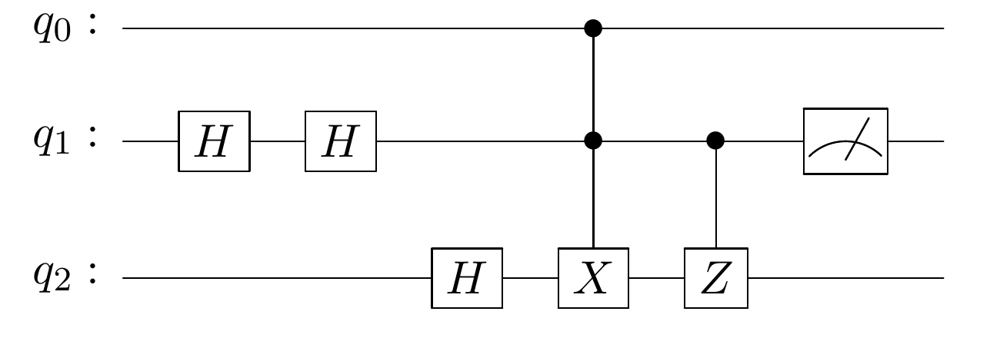

Circuito a simular
Listo para iniciar
H Hadamard
●─⊕/X Toffoli (CCNOT)
●─Z Z controlada (CZ)
◠ Medición
Convención: |q₀q₁q₂⟩, q₀ es el bit más significativo
Ver el diagrama original del enunciado

Estado inicial
Elige el estado de cada qubit. “Personalizado” acepta α y β, por ejemplo 1/√2, 0.6, 0.8i, -i/sqrt(2).
Atajos: → siguiente · R reiniciar